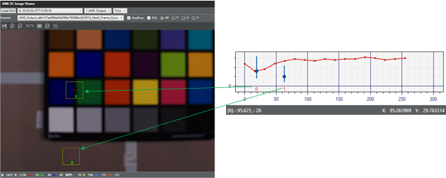
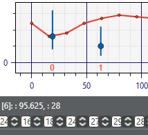
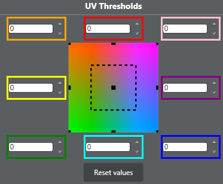
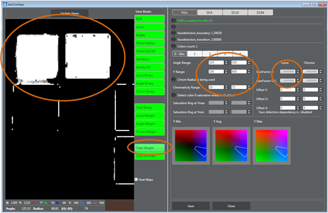

Advanced noise reduction (ANR) is a multipass spatial noise filtering for snapshot and
video modes.
-
On the Pipeline tab, click
ANR and then click a region in the
Regions group.
-
Click Load MCC Images
and load at least one YUV MCC image.
-
Click Submit.
-
Drag the top-left MCC grid marker to the center of the
top-left color patch. Drag the bottom-right MCC grid marker to the
center of the bottom-right color patch. All the grid markers should
align within the color patches of the MCC chart image. Ensure ~80% of
the patches are selected for best results.
-
Close the image.
-
Repeat process for each MCC image.
-
Click Load Flat Image
and load a flat field image.
Inaccurate flat field image may result in radial noise patches and heavily
effect calibration noise detection, especially in low frequencies.
-
Click Calibrate.
-
Click Calibrate LNR to run lens-dependent noise
reduction (LNR). To manually adjust the LNR, see (Advanced) Lens-dependent
Nosie Reduction (LNR).
(Advanced) Reserved Parameters
-
For high and low power modes, click Reserved Parameters and in the Power Control group, enable or
disable the following features:
- Enable Chroma Filter Extension
- Enable Luma Smoothing Treatment and Peak Treatment
- Enable Chroma Smoothing Treatment and Peak
Treatment
These features are used for 4K60 or 1080p videos.
Basic Level
-
In the Configuration
group, click Basic Level.
-
Adjust the Noise
Detection luma and chroma values as needed.
Noise detection separates details from noise at each
frequency range. A higher value applies more filtering, but may have
inconsistent edges.
Noise
Level Low Frequency affects noise levels for DC16
images. Noise Level Mid
Frequency affects noise levels for DC4 images.
Noise Level High
Frequency affects noise levels for full
images.
-
Adjust the Noise
Reduction luma and chroma values as needed.
The noise reduction amount defines the amount of blend between the
original image and the filtered one. A higher value creates a softer
image with less noise. It is recommended to keep the
Chroma sliders at the max values.
Adjust Strength Final
High Frequency for cleaner images with high
frequency granularity, retain textures and continuity, and reduce
harsh transitions between flat and non-flat areas.
Adjust Strength
(DCBlend2) Mid/Low Frequency for cleaner flat areas,
to retain low contrast textures for flat areas, and mid frequency
granularity.
-
Click Save to
retain all changes.
-
Click Close to
return to the main ANR tuning screen.
(Advanced) Base Functions
-
In the Configuration group, click
Base Functions.
-
Tune Luma Filter and Chroma
Filter from lowest pass to highest (i.e., DC64 > DC16 >
DC4 > Full).
If an issue arises, find the lowest pass where the issue occurs, place
a point of interest (POI), and try to resolve the issue.
DC64s typically do not require tuning.
-
Add POI markers where noise occurs in an image. Review the markers on
the threshold graph and if more pixels are distributed above than the
function, the pixels were not filtered enough. If overfiltering occurs
and more pixels are distributed below the function, adjust the function
to lower the filtering level. In the graph, the X-axis represents the
luma value and the Y-axis represents the derivative.

The I marker shows the highest and lowest derivatives around the POI.
If the POI line goes above the threshold, the pixels above the threshold
will be filtered. If the POI line is entirely under the threshold, all
pixels will be filtered.

-
Adjust the UV Thresholds for Luma
Filter and Chroma Filter as
necessary to offset the threshold according to chroma values. For
example, set a higher value for blues to increase filtering for sky-like
colors.
The UV limit is the distance of the black squares (see following
image) from the center. Larger values have less impact on low color
saturation; smaller values have more impact. The luma and chroma UV
limits are 64.

-
Set the scale for the functions set by the threshold
for a derivative length.
3(2nd derivative) sets the second order derivative
scale. It is recommended to use this value for contours (gradients) and
local peaks detection.
(Advanced) Lens-dependent Noise Reduction
(LNR)
-
In the Configuration group, click
Lnr.
-
Tune the Center and Ellipse
parameters A values, if needed.
The Center value defines the ellipse center
position in the image. For the Ellipse parameters
A value, 0.5 is a circle. Anything greater than 0.5 is
an ellipse, and anything smaller than 0.5 is a wide ellipse.
-
Evaluate the noise in the image center. If the image is overfiltered or
too noisy, adjust the Base Functions.
-
Adjust the four LUTs (LumaFilter, ChromaFilter, Y_Factor, and
UV_Factor). It is recommended to tune one LUT and use Copy
Lut and Paste Lut to copy and
paste the results to the other three LUTs. Further adjustments can be
made after.
-
To manually reset the LUT to be linear, set the reset to linear values
and click Reset to linear.
The left value must be 1. The second value should be the maximum LNR
correction, where the thresholds increase at the end of the
image.
(Advanced) Inter Length Control
-
In the Configuration group, click
Inter Length Control and adjust values as
needed.
False Colors
-
In the Configuration
group, click False Colors
-
Deselect the Enable check box in the Chroma Edge Treatment group for all passes (full, DC4,
DC16, and DC64).
-
Enable and enter values for enable_greytreatment_thr_modification for DC4 and full
passes only.
-
Enter values for Detection -
Chromaticity Theshold and Detection - Y Max Derivative Theshold for full pass.
Only tune for DC4 if it is highly necessary. Do not tune other
passes.
-
Click Save to
retain all changes.
-
ClickClose.
Filter Settings
-
In the Configuration group, click
Filter Settings and adjust the values as
needed.
The Full Luma Filter Kernel feature allows tuning for flat and edge areas.
This is for Full pass only. It is recommended to set the edge kernel flatter
than the flat kernel.
CNR
-
In the Configuration
group, click CNR and tune from the
lowest pass.
For example, if enabling CNR for Full and DC4, begin with DC4
and continue with Full. For Full, DC4, and DC16, begin with DC16, then DC4, then
Full.
-
For each color, measure several points including the UV angle, UV
radius, and Y value.
-
Enable Colors count.
-
Enter values for Angle Range, Y
Range, and saturation ranges.
- Angle range – Extreme values of UV angle measurements for the
chosen color.
- Y range – Extreme values of Y value measurements for the chosen
color.
- Saturation range – Extreme values of UV radius measurements for
the chosen color.
-
In Base Functions, find the gain to obtain the
function above derivative distribution. Enter this value in
GainFactor for luma and chroma.
-
(Optional) If using face detection, enable Face detection
dependency.
Examine color identification and check the impact of tuning
on additional images to assess and understand the tradeoffs. In the following
example, CNR is tuned to scale luma filter full pass base functions by 2 when
colors like skin tone patches in the MCC are detected.

-
Repeat process for each region.
-
Click to save any changes made.
Tune the temporal filter (TF) module
(video mode only).